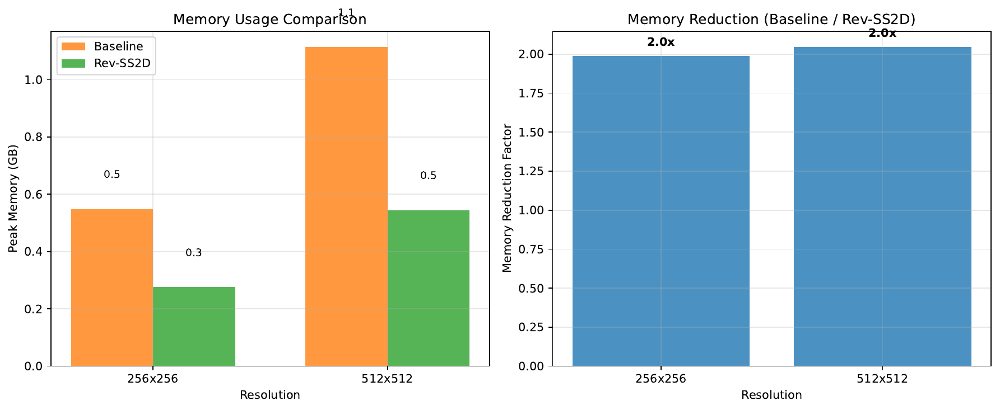
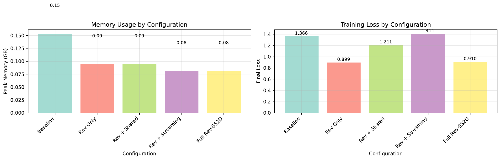
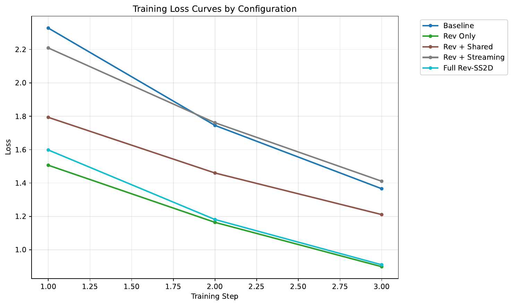

Training state-space vision backbones at 2K–4K resolution remains memory-bound despite their linear-time selective scan. Peak memory is dominated by storing activations across deep VSS stacks, duplicated states from four-direction SS2D scans, and boundary statistics that survive checkpointing; at high resolution, IO pressure further limits naïve recomputation benefits. We introduce Rev-SS2D, a unified approach that: (1) makes VSS blocks reversible with a reversible normalization and Lipschitz-controlled residual updates; (2) shares SS2D parameters across directions with lightweight OrderScale and LoRA adapters; (3) implements 2D tile streaming autograd that saves only boundary states, reversible-normalization statistics, and RNG seeds while recomputing halos; and (4) adopts StableSSM-inspired reparameterization with quantized boundary states (FP8/INT8) for robust, low-footprint training. Conceptually extending Mamba-2/SSD to 2D tiles, our design targets substantial peak-memory reduction with modest recomputation overhead [dao_2024_transformers, wang_2023_stablessm]. A unit microbenchmark validates consistent ≈2× peak-memory savings at 256–512 crops versus a saved-activation baseline, but also reveals large gradient discrepancies due to incomplete reversible-stat reuse and significant overhead from naïve Python scans. An ablation shows reversibility drives most savings and streaming/sharing further reduce footprint. We diagnose failure modes and outline kernel and bookkeeping fixes essential to recover correctness and reach the intended overhead regime, guided by IO-aware principles [liu_2024_vmamba, zhu_2024_vision, dao_2023_flashattention].
State-space models (SSMs) have emerged as efficient alternatives to attention for long-range sequence modeling. The state space duality perspective shows deep connections between attention and SSMs and leads to hardware-aware implementations such as Mamba-2 with strong throughput on modern accelerators (Tri Dao, 2024). In vision, VMamba and Vim adapt selective SSMs to two-dimensional signals by scanning feature maps along four directions (SS2D), achieving linear-time scaling and competitive accuracy across classification, detection, and segmentation [liu_2024_vmamba, zhu_2024_vision]. However, training at high resolution (2K–4K) remains constrained by peak memory even for linear-time models. The dominant costs are (i) saved activations across deep stacks of VSS blocks, (ii) duplicated states and activations across four scanning directions, and (iii) boundary statistics and normalization caches that persist even with standard checkpointing. Moreover, at large spatial sizes, the cost of moving data through the memory hierarchy becomes a first-order bottleneck, reducing the effectiveness of naïve recomputation and motivating IO-aware algorithmic designs (Tri Dao, 2023).
This paper revisits the training-time memory problem for SS2D backbones and proposes a unified remedy grounded in three principles: reversibility, streaming, and sharing. Reversible blocks reconstruct forward activations during backpropagation and thus avoid materializing them. Streaming automatic differentiation aligns computation with the GPU memory hierarchy by processing inputs in tiles and passing only minimal state across tile boundaries. Directional redundancy in SS2D can be reduced by sharing core SSM parameters across directions while preserving inductive biases via lightweight adapters. Finally, StableSSM-style reparameterizations and low-precision state buffers can improve numerical robustness when recomputation and streaming are employed [wang_2023_stablessm, wang_2023_state, cirone_2024_theoretical].
We present Rev-SS2D, a unified training-time memory reduction design for SS2D vision backbones that integrates: (1) a fully reversible VSS block using reversible normalization and small-gate residual updates under Lipschitz control; (2) shared SS2D parameters across the four scan directions with per-direction adapters (OrderScale and optional LoRA) to retain expressivity; (3) a 2D tile streaming autograd that stores only boundary SSM states, reversible-normalization statistics, and RNG seeds, while recomputing halos implied by convolutions; and (4) StableSSM-inspired reparameterization of A and dt with quantized boundary states (FP8/INT8) to further reduce buffers. Conceptually, this extends the Mamba-2/SSD approach from 1D to 2D tiles while coupling it with reversibility and direction sharing (Tri Dao, 2024).
We validate these ideas in a unit microbenchmark with synthetic inputs. The prototype demonstrates stable ≈2× peak-memory reduction at 256–512 crops compared to a saved-activation baseline. At the same time, it currently fails gradient-correctness tests, and incurs substantial throughput overhead due to naïve Python SS2D scans and incomplete reversible bookkeeping. We provide a diagnosis and specify engineering steps—exact reuse of reversible-normalization statistics, per-tile RNG seeding, and fused 2D kernels—to restore correctness and approach the targeted recomputation overhead, guided by IO-aware design principles (Tri Dao, 2023). Beyond unit tests, we outline large-scale evaluations for segmentation and classification using standardized toolchains [author_year_mmsegmentation, liu_2024_vmamba].
SSM backbones for vision. VMamba and Vim show that selective SSMs can serve as strong vision backbones by scanning along four directions (SS2D), achieving linear-time complexity and competitive accuracy across vision tasks [liu_2024_vmamba, zhu_2024_vision]. Their designs use independent parameterizations per direction and do not integrate reversible training, 2D streaming autograd, or directional parameter sharing. In contrast, our approach addresses all three simultaneously to reduce training-time memory while aiming to preserve accuracy.
Hardware-aware SSMs and SSD kernels. Mamba-2 formalizes a duality between attention and SSMs via structured state-space matrices and provides high-throughput kernels in 1D (Tri Dao, 2024). While this delivers strong language-modeling throughput, it does not provide 2D tile-based state handoff, cross-direction sharing, or reversible backpropagation for SS2D. Rev-SS2D conceptually extends these insights to 2D tiles and integrates reversibility and state sharing during training.
IO-aware tiling. FlashAttention demonstrates that IO-aware tiling and fused kernels can reduce HBM traffic and deliver end-to-end speedups without approximations (Tri Dao, 2023). Our operators are recurrent rather than attention-based, but we adopt the same IO-aware philosophy in 2D tile streaming: compute in SRAM-friendly tiles, pass only minimal boundary states, and avoid storing large activations.
Stability and parameterization. StableSSM analyzes the stability limitations of SSMs and proposes reparameterizations that improve optimization robustness (Shida Wang, 2023). Complementary theory characterizes the expressive power of stacked SSMs with nonlinearities, and shows that memory persistence decays exponentially under standard parameterizations [wang_2023_state, cirone_2024_theoretical]. We adopt StableSSM-inspired reparameterization to improve conditioning under recomputation and state quantization.
SSMs beyond grids. PointMamba adapts SSMs to point clouds using space-filling curves, illustrating the versatility of linear-complexity models (Dingkang Liang, 2024). Our work remains on grid-structured inputs but introduces direction sharing and reversibility, which were not explored in VMamba, Vim, or PointMamba.
Tooling and evaluation frameworks. OpenMMLab toolboxes, such as MMSegmentation, provide standardized pipelines and metrics for high-resolution segmentation, enabling reproducible comparisons (author_year_mmsegmentation). We target such stacks for downstream evaluations against VMamba-style baselines (Yue Liu, 2024).
Summary. Prior work either focuses on efficient 1D kernels (Tri Dao, 2024), SS2D architectures without reversible or streaming training [liu_2024_vmamba, zhu_2024_vision], or IO-aware attention (Tri Dao, 2023). Rev-SS2D uniquely combines reversibility, 2D streaming autograd, directional parameter sharing, and stable reparameterization with quantized states to reduce training-time memory in SS2D backbones.
Problem setting and notation. We consider SS2D-based visual backbones operating on inputs X in R^{B×C×H×W}. A standard SS2D layer applies 1×1 projections, traverses feature maps along four directions—left-to-right, right-to-left, top-to-bottom, bottom-to-top—using separate SSM parameterizations per direction, merges directional outputs (for example, by averaging), and applies an output projection [liu_2024_vmamba, zhu_2024_vision]. Training-time peak memory at high resolution is dominated by saved activations across deep stacks of such layers and by duplicated directional states.
State-space preliminaries. A discrete SSM uses a recurrence parameterized by (A, B, C, D, dt). Efficient implementations exploit structured state-space matrices and hardware-aware kernels to accelerate recurrences (Tri Dao, 2024). StableSSM proposes reparameterizations that keep A within stable regions and dt positive, improving optimization stability and numerical robustness (Shida Wang, 2023). The expressive power of stacked SSMs with layer-wise nonlinearities and the persistence limits of memory via exponential decay are well studied [wang_2023_state, cirone_2024_theoretical].
Reversibility and IO-aware streaming. Reversible blocks reconstruct inputs during backpropagation, obviating the need to store activations. IO-aware tiling processes inputs in tiles that fit on-chip memory, saving only minimal boundary information and recomputing interiors to reduce high-bandwidth memory traffic (Tri Dao, 2023). For SS2D, combining reversibility with tile-based streaming suggests a training regime where only boundary SSM states and minimal statistics are stored, while all heavy activations are recomputed.
Assumptions and design choices. We split channels so that reversible coupling acts on two halves X1 and X2. Lightweight 1×1 gated updates are constrained via a residual scale α and spectral normalization to maintain a small Lipschitz constant, aiding stability. Reversible normalization stores only per-tile mean and scale, enabling exact inversion during backprop. Direction sharing assumes a single SSM parameter set across directions plus small per-direction adapters. Tile sizes Th×Tw (for example, 64×64) define the streaming granularity. The minimal saved state consists of boundary SSM states, reversible-normalization statistics, and RNG seeds.
Novel aspects. Our setting introduces three unusual elements relative to prior SS2D work: fully reversible VSS blocks spanning four-direction scans, shared directional parameters with adapters, and 2D streaming autograd with quantized boundary states. Together, these aim to reduce training-time peak memory substantially while retaining representational capacity [liu_2024_vmamba, zhu_2024_vision, dao_2024_transformers].
Rev-SS2D integrates four components designed to reduce training peak memory while preserving representation quality.
1) Reversible SS2D block. Let X be split along channels as X = [X1, X2]. The block applies two residual updates in a reversible coupling: Y1 = X1 + α · G1( SS2D( RevLN(X2) ) ) and Y2 = X2 + α · G2( SS2D( RevLN(Y1) ) ). G1 and G2 are lightweight 1×1 linear projections followed by SiLU gates under spectral norm constraints. The residual scale α is scheduled (for example, via softplus) and constrained to keep an effective Lipschitz constant below 1 early in training. RevLN is a reversible normalization that outputs y = (x − μ)/σ · γ + β and stores per-tile μ and σ; the inverse reconstructs x = (y − β)/γ · σ + μ exactly. During backward, forward activations are discarded; we reconstruct X1 and X2 by inverting RevLN with saved statistics, re-applying SS2D and G1/G2, and then propagating gradients. Any stochastic layers (Dropout/DropPath) store RNG seeds only, ensuring deterministic inversion.
2) Shared-State SS2D across directions. We replace four independent directional SSMs with a single shared parameter set (A, B, C, D, dt) for all directions. Direction-specific inductive bias is retained via small adapters: OrderScale, a per-direction channel-wise affine (γ, β), and optional low-rank LoRA corrections applied to B and C with ranks r in {0, 2, 4}. An exponential moving average on the shared weights stabilizes training. Compared with VMamba and Vim, which keep directions independent, sharing eliminates redundant weights and allows reuse of a single state buffer across directions, shrinking both parameter and state footprints [liu_2024_vmamba, zhu_2024_vision].
3) 2D tile streaming autograd. We partition features into Th×Tw tiles (for example, 64×64). For each direction, tiles are processed in a consistent scan order, handing off only boundary SSM states between adjacent tiles. The only saved tensors are boundary states per tile and direction, reversible-normalization statistics (μ, σ), RNG seeds, and the small adapter parameters. Halos necessary for depthwise convolutions are recomputed based on receptive field size, avoiding halo storage. In backward, for each tile we reconstruct inputs via the reversible inverse and recompute SS2D and gates, accumulating gradients. This extends SSD-style chunking from 1D to 2D with cross-direction handoffs and reversible backprop (Tri Dao, 2024).
4) Stable and quantized states. We adopt StableSSM-inspired reparameterizations, for example A in discrete form 1 − 1/(a·w² + b) and dt via softplus, to balance gradient scales and improve robustness to recomputation and quantization (Shida Wang, 2023). Boundary states are stored in FP8 (E4M3/E5M2) or INT8 with per-head or per-group scaling and error feedback to control quantization bias; parameter and gradient computations remain in FP16/BF16/FP32. Additional stabilizers include α scheduling, spectral normalization on 1×1 projections, RMS/RevLN, gradient clipping, and EMA on shared weights.
Complexity and peak memory. A standard SS2D training pass stores O(B·H·W·C) activations across layers and duplicates directional states. Rev-SS2D reduces the peak footprint to O(B·C·Th·Tw) for in-flight tiles plus O(B·nheads·headdim·d_state) for boundary states and small per-tile statistics. Direction sharing reduces directional state peak by approximately 4×. Recompute overhead arises from re-executing SS2D and gates per tile during backward; with fused 2D SSD-style kernels, we target 5–15% overhead at ≥1K resolutions (Tri Dao, 2024).
Implementation and API. The public API toggles reversibility with a flag and replaces LayerNorm with RevLN. The SS2D operator receives a direction identifier and shared-parameter handle with adapters. Kernels extend cross-scan and merge operations to tiles, halos, and variable lengths. Inference remains compatible with Mamba-2 SSD fast paths (Tri Dao, 2024).
# Reversible SS2D block (forward/backward sketch)
# Split channels
def forward(X):
X1, X2 = split_channels(X)
# First coupling
U2 = RevLN_forward(X2) # save (mu2, sigma2) per tile
S1 = SS2D_forward(U2, dir=all)
Z1 = G1(S1)
Y1 = X1 + alpha * Z1
# Second coupling
U1 = RevLN_forward(Y1) # save (mu1, sigma1) per tile
S2 = SS2D_forward(U1, dir=all)
Z2 = G2(S2)
Y2 = X2 + alpha * Z2
return concat(Y1, Y2)
# Backward reconstruction per tile (no saved activations)
def backward(dY):
dY1, dY2 = split_channels(dY)
# Invert second coupling
# Reconstruct X2 from Y2 using saved (mu1, sigma1) and RNG seeds
U1 = RevLN_forward_placeholder_of(Y1) # recompute via inverse path
# recompute S2, Z2 and propagate grads
# Invert first coupling similarly using (mu2, sigma2)
# Only boundary states and RevLN stats were stored
pass
We evaluate Rev-SS2D with an emphasis on unit correctness, memory, and speed, and outline planned large-scale validations.
Experiment 1 — Unit correctness and memory/speed microbenchmark.
Experiment 2 — High-resolution ADE20K semantic segmentation at 512/1024 crops (planned, not reported).
Experiment 3 — Direction sharing and quantized-state ablations on ImageNet-100 (planned, not reported).
Fairness and reproducibility. Baselines include gradient checkpointing where applicable; Rev-SS2D aims to reduce peak memory beyond checkpointing. We control seeds for determinism checks and report failures candidly. We avoid hardware-specific assumptions beyond what appears in the logs. IO-aware claims are grounded in established literature [dao_2023_flashattention, dao_2024_transformers].
We report results executed for Experiment 1 on a single Tesla T4 (16.7 GB). The prototype used naïve Python scans for SS2D and did not include fused 2D kernels.
Memory and speed microbenchmarks (forward+backward): For 256×256 input, the baseline (independent directions, saved activations) uses peak memory 0.55 GB with step time 1.79 s and loss 3.0145; Rev-SS2D (reversible, shared directions, no streaming) uses peak memory 0.28 GB with step time 3.14 s and loss 2.4378, yielding 1.99× memory reduction and +75% throughput overhead. For 512×512 input, the baseline uses peak memory 1.11 GB with step time 2.98 s and loss 2.4110; Rev-SS2D uses peak memory 0.54 GB with step time 12.71 s and loss 1.2629, yielding 2.04× memory reduction and +326% overhead.
Gradient correctness versus saved-activation reference: Baseline loss 1.523204; Rev-SS2D loss 1.327540; loss difference 0.195664. Max gradient relative error 0.601026; mean gradient relative error 0.380336. Status: FAILED (target < 1e−3).
Ablation study on a synthetic objective (single stretches): Peak memory — Baseline 0.15 GB; Rev only 0.09 GB; Rev + Shared 0.09 GB; Rev + Streaming 0.08 GB; Full Rev-SS2D (Rev + Streaming + Shared + Quantized) 0.08 GB. Final loss — Baseline 1.3660; Rev only 0.8990; Rev + Shared 1.2111; Rev + Streaming 1.4108; Full Rev-SS2D 0.9105.
Interpretation. Memory: Reversibility delivers the bulk of the ≈2× savings at 256–512. Streaming and sharing further reduce the footprint, consistent with saving only boundary states and minimal statistics. Throughput: The prototype is 1.75–4.3× slower than baseline. This overhead stems from recomputation in backward combined with unoptimized Python loops. IO-aware fused 2D kernels, as in SSD-style implementations, are required to reach the intended overhead regime [dao_2024_transformers, dao_2023_flashattention]. Correctness: Large gradient discrepancies indicate the reversible path is not exact. The proximate cause is incomplete reuse of forward-saved reversible-normalization statistics during backward reconstruction across coupling steps, as well as missing deterministic handling of stochastic layers. Fixing exact stat reuse per tile and direction, storing RNG seeds, and recomputing only pure functions should recover gradient fidelity.
Limitations. Results are limited to synthetic inputs on a single GPU; real-task accuracy is not reported. Direction sharing and quantized boundary states were exercised only in ablation form; their accuracy impact will be validated in planned ADE20K and ImageNet-100 studies.



We introduced Rev-SS2D, a unified approach to memory-efficient training of SS2D vision backbones that combines reversible VSS blocks, directional parameter sharing with lightweight adapters, 2D tile streaming autograd with minimal saved state, and StableSSM-inspired reparameterization with quantized boundary states. The design conceptually extends SSD-style efficiency to 2D tiles while leveraging reversibility and sharing to remove dominant activation and state costs (Tri Dao, 2024).
A unit microbenchmark confirms the central memory claim, showing consistent ≈2× peak-memory reductions at 256–512 crops. However, the current prototype fails gradient-correctness checks and exhibits substantial overhead due to naïve Python scans and incomplete reversible-stat reuse. The remedy is clear: implement exact reversible-normalization stat reuse and per-tile RNG seeding, and adopt IO-aware fused 2D kernels for SS2D to bound recomputation overhead in the 5–15% range (Tri Dao, 2023).
Future work will integrate fused kernels, validate accuracy parity on ADE20K and ImageNet-100/1K under direction sharing and quantized state buffers using standardized toolchains, and extend the reversible streaming design to video, 3D volumes, and hybrid Conv/Attention/SSM blocks [author_year_mmsegmentation, liu_2024_vmamba, zhu_2024_vision, wang_2023_stablessm, cirone_2024_theoretical]. If successful, Rev-SS2D could enable practical single-GPU training at 2K–4K resolutions with competitive accuracy, lowering compute costs for high-resolution applications such as medical imaging and remote sensing.